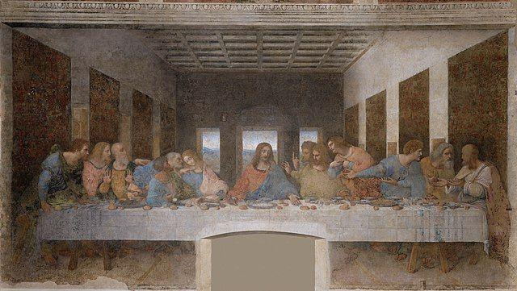
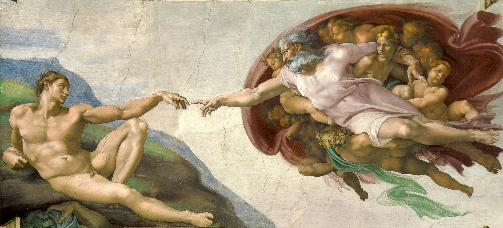
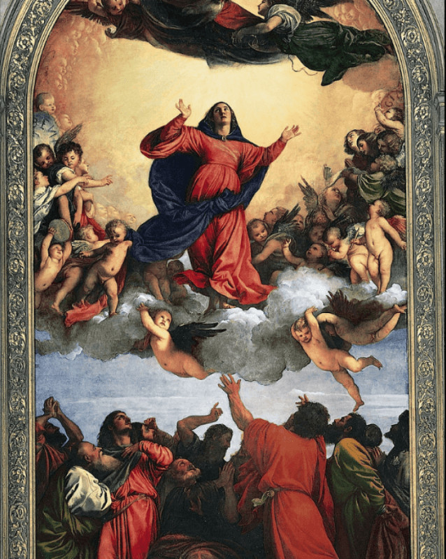
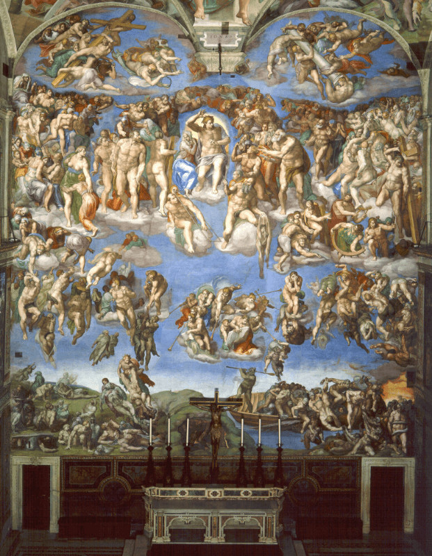

The Last Supper
Considered to be the best artwork by Leonardo Da Vinci in 1498, the Last Supper is an important painting of the Renaissance period. The image shows Jesus with his disciples for his last supper. The painting is noted for its clever use of color, light, and anatomy. The painting is also a subject of many discussions and conjectures. Many have proposed that the disciple sitting to the right of Jesus is Mary Magdalene and many have also wondered the significance or meaning of the V shape between Jesus and the person on the right. Despite all the conjectures, the Last Supper is one of the masterpieces by Leonardo Da Vinci.
Primavera

The word means spring in Italian. Primavera is a painting of Sandro Botticelli whose original name was Alessandro di Mariano Filipepi. The painting is also known as 'Allegory of Spring'. It is believed that Botticelli is created this piece of art around 1482 and is said to be one of the prime examples of Renaissance art. Many have attempted to interpret the painting and many have come up with explanations. Some say it is a mythical allegory while some say it is about the change of season into spring. This painting is popular because of the use of color and different explanations attached to it. Primavera is believed to be the most controversial painting in the world.
The Creation of Adam
Created in 1512, this is one of the iconic paintings of Michelangelo. The creation of Adam is the painting on the ceiling of the Sistine Chapel. Even though this is one of the most replicated paintings of all time, it is only second in popularity to Mona Lisa. The painting has become a symbol of humanity as the image depicts the hand of both God and Adam on the verge of touching.
Mona Lisa

The painting Mona Lisa by Leonardo Da Vinci is one of the most famous and recognized paintings in history. Unarguably it is the most discussed painting because of the enigmatic smile. There have been many discussions about the smile of Mona Lisa, whether she is smiling or not. The major feature of this painting is that Da Vinci has painted her eyes in such a way that even when you change the angle of the view, the eyes of Mona Lisa seems to always follow you. The painting is done in oil on wood and is presently under the ownership of the Government of France. Mona Lisa is exhibited in Louvre, Paris and it belongs to the public, which means that it cannot be bought or sold.
The Assumption of the Virgin
The high altar in the Basilica di Santa Maria Gloriosa dei Frari, is where this painting by Tiziano Vecellio, also known as Titian is found. This painting was done by Titian in his early years and he has used vivid colors in this painting. Assumption of the Virgin is a painting about the rise of Mother Mary into heaven. Titian has painted Mother Mary in a red dress who is raised to heaven to where God is gazing down in Mary while apostles bid her farewell from the ground.
The Last Judgement
This painting by Michelangelo Buonarroti completed in the year 1541 is found on the altar wall of the Sistine Chapel in Vatican City. The painting is about the second coming of Jesus, the day when God shall judge all humanity. Michelangelo has painted Jesus in the center surrounded by saints. The top portion of the painting shows the resurrection of the dead to heaven and the bottom portion shows the descent of sinners into hell. The use of colors and excellent brushwork make this painting of the most revered painting in the world.